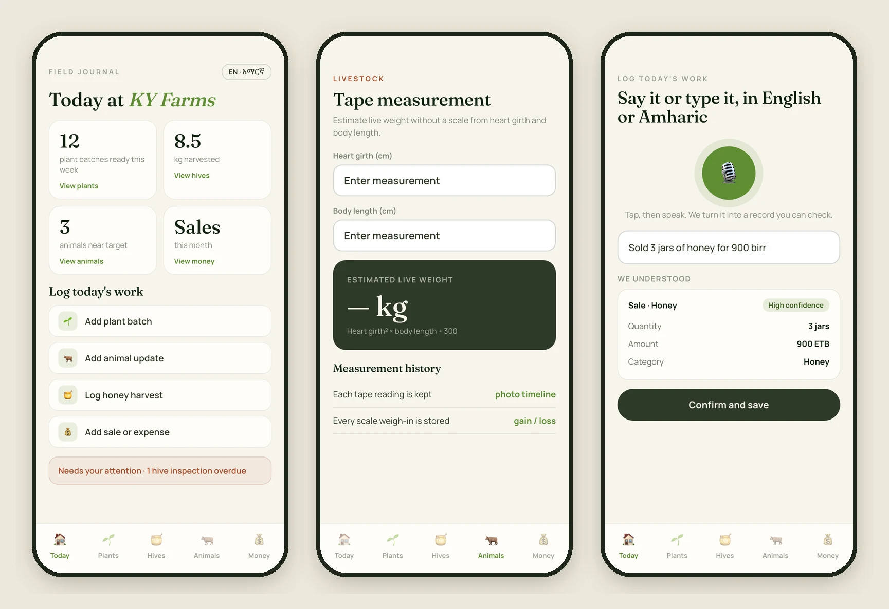
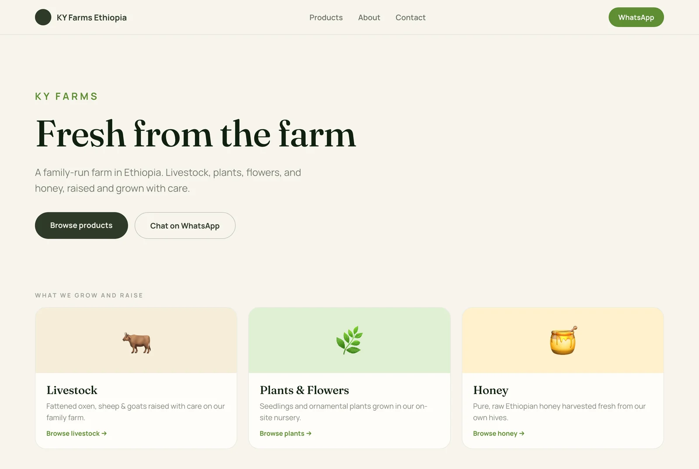
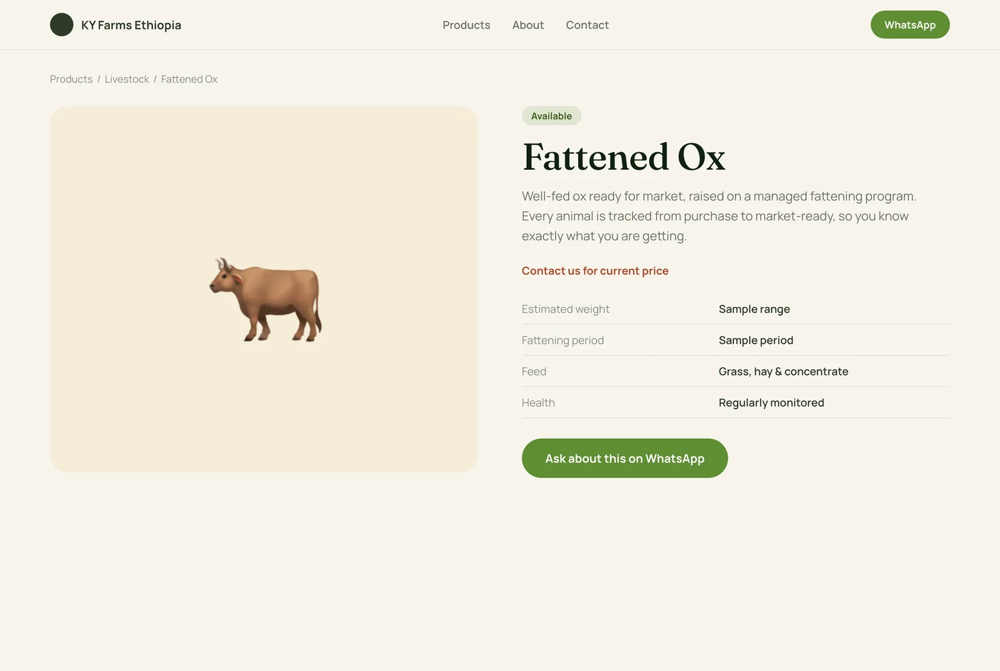

KY Farms
A family farm’s two digital tools, built end to end: a bilingual, offline-first field journal the family runs the farm with, and a public storefront for customers.
The farm
KY Farms is a small family farm in Ethiopia with three very different activities: a plant nursery, beehives and honey, and fattening livestock. Four family members share it, and money is tracked in Ethiopian Birr.
I built two products for it, end to end: a private field journal the family runs the farm with, and a public website for customers.
- The main user is the owner and manager, who needs to see the whole farm at a glance.
- A second user registers plant batches and is not technical, so the interface had to be simple enough to use the first time.
- Both work in the field, where signal comes and goes, and where English is not always the first language.
The mobile app
A mobile-first web app, installable on a phone, designed to feel like a warm field notebook rather than a sterile dashboard: cream and clay backgrounds, olive greens, large tap targets, bottom navigation, and sheets that slide up from the bottom.

Three modules, one farm
Seedlings from sowing to sale-ready, with status, quantity, location and photos. Hives and honey with inspections and harvests by batch. Livestock by weight gain, health and purchase cost.
Tape measurement
Estimates an animal’s live weight from heart girth and body length, with a history and photo timeline, so a scale is not required. Scale weigh-ins are logged too, with gain and loss between each.
Sales and expenses
Income broken down by plants, honey and livestock, linked back to the specific plants, hives or animals sold. The sale form offers the registered items for the category chosen.
Log it by voice or text
Say or type an update in English or Amharic. It becomes structured records, such as a sale, an expense, a weigh-in or a harvest, with a one-line “we understood” and a confidence level. Nothing saves until the user confirms.
Works offline
Records queue on the phone when there is no signal and sync when it comes back, so nobody has to wait to write something down.
English and Amharic
The whole interface switches between English and Amharic (አማርኛ) from Settings. Guests can look around without an account.
The website
A public storefront so customers can see what the farm has and reach the family directly. There is no checkout, because the farm sells direct: the call to action is WhatsApp or a phone call.
- Home introduces the farm and its three categories: livestock, plants and flowers, and honey.
- Products can be filtered by category. Each product shows an availability status (Available, Limited, Out of stock or Seasonal), a price or “contact us,” and when it was last updated.
- About and Contact tell the family story and open a WhatsApp conversation with the product already named.


Visit kyfarmsethiopia.com.
How it is built
- Front end: Next.js 15 with TypeScript and Tailwind, in Fraunces and Manrope.
- Back end: Supabase for the database, sign-in (magic link, plus a guest mode) and photo storage.
- Offline and install: an on-device queue for writes, a service worker and a web app manifest.
- Language: next-intl, with full English and Amharic.
- Voice and text log: speech is transcribed, then a language model turns the text into records, always with a confirm step.
- Weather: a small widget on the Today screen.